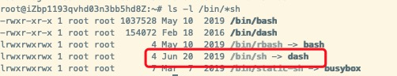

Shell フロー制御
Java、PHP などの言語とは異なり、sh のフロー制御は空にできません（以下は PHP のフロー制御の書き方です）：
例
if (isset($_GET["q"])) {
search(q);
}
else {
// 何もしない
}
sh/bash ではこのように書くことはできません。else 分岐に実行する文がない場合は、この else を書かないでください。
if else
if
if 文の構文形式：
if condition
then
command1
command2
...
commandN
fi
1行で書く場合（ターミナルのコマンドプロンプト向け）：
if [ $(ps -ef | grep -c "ssh") -gt 1 ]; then echo "true"; fi
末尾のfiはif逆に綴ったもので、後で似たようなものにも出会います。
if else
if else 構文形式：
if condition
then
command1
command2
...
commandN
else
command
fi
if else-if else
if else-if else 構文形式：
if condition1
then
command1
elif condition2
then
command2
else
commandN
fi
if else の[...]判定文では「より大きい」は-gt、「より小さい」は-lt。
if [ "$a" -gt "$b" ]; then
...
fiもし((...))を判定文として使う場合、「より大きい」と「より小さい」は直接使えます> 和 <。
if (( a > b )); then
...
fi
次の例では、2つの変数が等しいかどうかを判定します：
例
b=20
if [ $a == $b ]
then
echo "a は b と等しい"
elif [ $a -gt $b ]
then
echo "a は b より大きい"
elif [ $a -lt $b ]
then
echo "a は b より小さい"
else
echo "条件に一致するものはありません"
fi
出力結果：
a 小于 b
使用する((...))を判定文として使う:
例
b=20
if (( $a == $b ))
then
echo "a は b と等しい"
elif (( $a > $b ))
then
echo "a は b より大きい"
elif (( $a < $b ))
then
echo "a は b より小さい"
else
echo "条件に一致するものはありません"
fi
出力結果：
a 小于 b
if else 文はしばしば test コマンドと組み合わせて使用されます。次のようになります：
例
num2=$[1+5]
if test $[num1] -eq $[num2]
then
echo '2つの数字は等しい!'
else
echo '2つの数字は等しくない!'
fi
出力結果：
两个数字相等!
for ループ
他のプログラミング言語と同様に、Shell は for ループをサポートしています。
for ループの一般的な形式は次のとおりです：
for var in item1 item2 ... itemN
do
command1
command2
...
commandN
done
1行で書く場合：
for var in item1 item2 ... itemN; do command1; command2… done;
変数の値がリスト内にある場合、for ループはすべてのコマンドを一度実行し、変数名を使用してリスト内の現在の値を取得します。コマンドは、任意の有効な shell コマンドおよびステートメントを使用できます。in リストには、置換、文字列、ファイル名を含めることができます。
in リストは省略可能です。使わない場合、for ループはコマンドラインの位置パラメータを使用します。
例えば、現在のリストの数字を順番に出力します：
例
do
echo "The value is: $loop"
done
出力結果：
The value is: 1 The value is: 2 The value is: 3 The value is: 4 The value is: 5
文字列内の文字を順番に出力します：
#!/bin/bash
for str in This is a string
do
echo $str
done
出力結果：
This is a string
while 文
while ループは一連のコマンドを繰り返し実行するために使われ、入力ファイルからデータを読み取るためにも使われます。その構文形式は次のとおりです：
while condition
do
command
done
以下は基本的な while ループです。テスト条件は、int が 5 以下の場合、条件が真を返すというものです。int は 1 から始まり、ループが処理されるたびに int に 1 が加算されます。上記のスクリプトを実行すると、1 から 5 までの数字を返して終了します。
例
int=1
while(( $int<=5 ))
do
echo $int
let "int++"
done
スクリプトを実行すると、出力：
1 2 3 4 5
上記の例では Bash の let コマンドを使用しています。let コマンドは1つ以上の式を実行するために使用され、変数の計算では変数を表すために $ を付ける必要はありません。詳細は次を参照してください：Bash let コマンド
。while ループはキーボード入力の読み取りに使用できます。次の例では、入力情報が変数 FILM に設定され、<Ctrl-D> を押すとループが終了します。
例
echo -n '好きなウェブサイト名を入力: '
while read FILM
do
echo "そうです！$FILMは良いウェブサイトです"
done
スクリプトを実行すると、出力は次のようになります：
按下 <CTRL-D> 退出 输入你最喜欢的网站名:菜鸟教程 是的！菜鸟教程 是一个好网站
無限ループ
無限ループの構文形式：
while :
do
command
done
または
while true
do
command
done
または
for (( ; ; ))
until ループ
until ループは、条件が true になるまで一連のコマンドを実行し、true になると停止します。
until ループは while ループとは処理の仕方が正反対です。
一般的には while ループの方が until ループよりも優れていますが、ある場合、ほんのまれな状況では until ループの方がより役立つことがあります。
until 構文形式:
until condition
do
command
done
condition は通常条件式です。戻り値が false の場合はループ本体内の文を実行し続け、そうでなければループを抜けます。
次の例では、until コマンドを使用して 0 から 9 までの数字を出力します：
例
a=0
until [ ! $a -lt 10 ]
do
echo $a
a=`expr $a + 1`
done
実行結果：
出力結果は：
0 1 2 3 4 5 6 7 8 9
case ... esac
case ... esac多選択文であり、他の言語の switch ... case 文と類似した多分岐選択構造です。各 case 分岐は右丸括弧で始まり、2つのセミコロン;;で break を表します。つまり実行が終了し、case ... esac 文全体を抜け出します。esac（case を逆にしたもの）が終了マークです。
case 文を使用して、値とパターンをマッチングできます。マッチングが成功したら、対応するコマンドを実行します。
case ... esac構文形式は次のとおりです：
case 值 in
模式1)
command1
command2
...
commandN
;;
模式2)
command1
command2
...
commandN
;;
esac
case の動作方法は上記のとおりです。値の後ろには単語inが必要です。各パターンは右括弧で終了する必要があります。値には変数または定数を使用できます。値があるパターンに一致することがわかると、その間のすべてのコマンドが実行され始めるまで。;;。
値はマッチする各パターンを検証します。一度パターンがマッチすると、マッチしたパターンの対応コマンドを実行した後、他のパターンは続行されません。マッチするパターンがない場合、アスタリスク * でその値をキャプチャし、後続のコマンドを実行します。
次のスクリプトは 1 から 4 までの入力を促し、各パターンとマッチングします：
例
echo '入力した数字は:'
read aNum
case $aNum in
1) echo 'あなたは 1 を選択しました'
;;
2) echo 'あなたは 2 を選択しました'
;;
3) echo 'あなたは 3 を選択しました'
;;
4) echo 'あなたは 4 を選択しました'
;;
*) echo 'あなたは 1 から 4 までの数字を入力していません'
;;
esac
異なる内容を入力すると、異なる結果になります。例：
输入 1 到 4 之间的数字: 你输入的数字为: 3 你选择了 3
次のスクリプトは文字列をマッチングします：
例
site="runoob"
case "$site" in
"runoob") echo "菜鸟教程"
;;
"google") echo "Google 検索"
;;
"taobao") echo "淘宝网"
;;
esac
出力結果は：
菜鸟教程
ループを抜ける
ループの実行中に、ループ終了条件に達する前に強制的にループを抜ける必要がある場合があります。Shell はこの機能を実現するために2つのコマンドを使用します：break 和 continue。
break コマンド
break コマンドはすべてのループを抜けることを許可します（後続のすべてのループの実行を終了します）。
次の例では、ユーザーが 5 より大きい数字を入力するまで、スクリプトは無限ループに入ります。このループを抜けてシェルプロンプトに戻るには、break コマンドを使用する必要があります。
例
while :
do
echo -n "1 から 5 までの数字を入力:"
read aNum
case $aNum in
1|2|3|4|5) echo "入力した数字は$aNum!"
;;
*) echo "入力した数字は 1 から 5 までの間ではありません! ゲームオーバー"
break
;;
esac
done
上記のコードを実行すると、出力結果は：
输入 1 到 5 之间的数字:3 你输入的数字为 3! 输入 1 到 5 之间的数字:7 你输入的数字不是 1 到 5 之间的! 游戏结束
continue
continue コマンドは break コマンドと似ていますが、1つだけ違いがあります。すべてのループを抜けるのではなく、現在のループだけを抜けます。
上記の例を修正します：
例
while :
do
echo -n "1 から 5 までの数字を入力: "
read aNum
case $aNum in
1|2|3|4|5) echo "入力した数字は$aNum!"
;;
*) echo "入力した数字は 1 から 5 までの間ではありません!"
continue
echo "ゲームオーバー"
;;
esac
done
コードを実行すると、5 より大きい数字を入力した場合、この例のループは終了せず、文echo "ゲームオーバー"は決して実行されません。
その他の拡張
情空明月
moo***v@gmail.com
shell の for ループは、記事で説明した方法だけではありません。
他の言語の for ループに慣れている人にとっては、少し違和感があるかもしれません。
for((assignment;condition:next));do command_1; command_2; commond_..; done;上に示したように、ここでの for ループは C 言語のものと似ていますが、完全に同じではありません。
通常、シェル変数を呼び出すには $ を付ける必要がありますが、for の (()) の中では必要ありません。次に例を見てみましょう。
#!/bin/bash for((i=1;i<=5;i++));do echo "这是第 $i 次调用"; done;実行結果：
C 言語と同様に、代入と次のステップの実行はループ文の前のコード内に置くことができます。ここで注意すべき点は、ループ本体内で for の next 操作を行う場合は、変数に $ を付けることを忘れないでください。そうしないとプログラムが無限ループになります。
情空明月
moo***v@gmail.com
This_Is_Y
Thi***s_Y@qq.com
参考アドレス
ubuntu 6.10 以降、ubuntu は以前のデフォルトのbash shellを次のものに置き換えましたdash shell、その表現は/bin/shリンクが張り替えられていることです/bin/dashではなく、従来の/bin/bash。
次のコマンドで確認できますls -l /bin/*shコマンドで確認できます：

したがって、〜を使用するときshコマンドでスクリプトを実行するとき、実際には dash が使用されており、dash はこの C 言語形式の for ループの書き方をサポートしていません。
解決方法：〜を使用するbash〜の代わりにshスクリプトを実行します：
This_Is_Y
Thi***s_Y@qq.com
参考アドレス
风鹏正举
cle***@126.com
for ループが 1 ずつ増加する場合は、〜を利用できますseqコマンドを使用して数値のシーケンスを生成できます。参考として次のように書きます：
実行結果：
場合によっては、while を使用するよりも便利です。
风鹏正举
cle***@126.com
開色
wrd***main@163.com
testコマンドと[は本質的に1つのコマンドであり、[は1つのコマンドで、右角括弧を自動的に検出します]、〜を使用してwhich [Linux 内のコマンドの場所を確認します。test右角括弧を自動的に検出しません] 。
[内部は C/C++ で書かれているため、そのソースコードを確認できます：https://github.com/freebsd/freebsd-src/blob/master/bin/test/test.c。
[[bash シェル環境が自ら実装した判定方法であり、〜より[より安全です。例えば：
1. [〜を認識できません$var変数の値
2. [大なり記号、小なり記号をリダイレクト記号として認識し、〜をaファイルの入出力として扱います
[〜と比較すると[[の利点は、bash シェル環境が自ら実装していることです[[他のシェル環境では互換性がないため、[ のほうが移植性に優れています。
詳細は次を参照してください：
http://mywiki.wooledge.org/BashGuide/Practices#Bash_Tests
https://zhuanlan.zhihu.com/p/136591210
開色
wrd***main@163.com